GTA 6 PC news
Release date updates, leak coverage and plain-English explainers for everyone waiting on GTA 6 for PC. Every article links to its sources.
Popular searches: release date · system requirements · PC download · native build tracker · AnyPS5 · PS5 build on PC · emulator · Steam
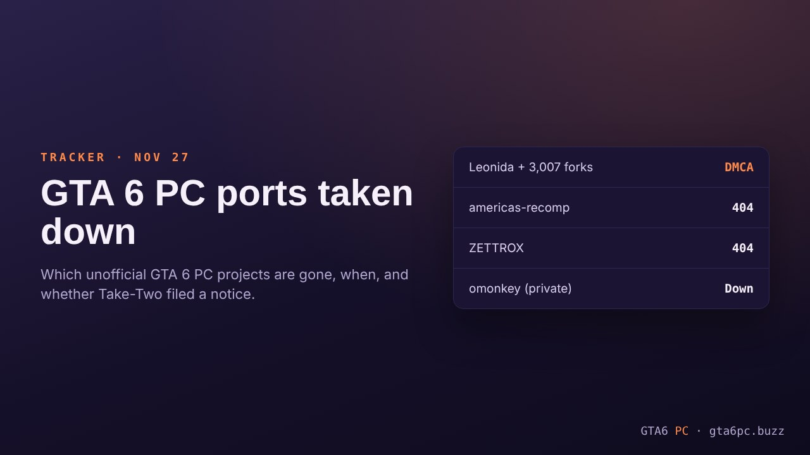
Takedown trackerEvery GTA 6 PC Port Taken Down So Far: Leonida, ZETTROX and More
Leonida, ZETTROX, americas-recomp and omonkey have all gone offline since November 23. Here is which GTA 6 PC projects are gone, when, and whether Take-Two was behind it.
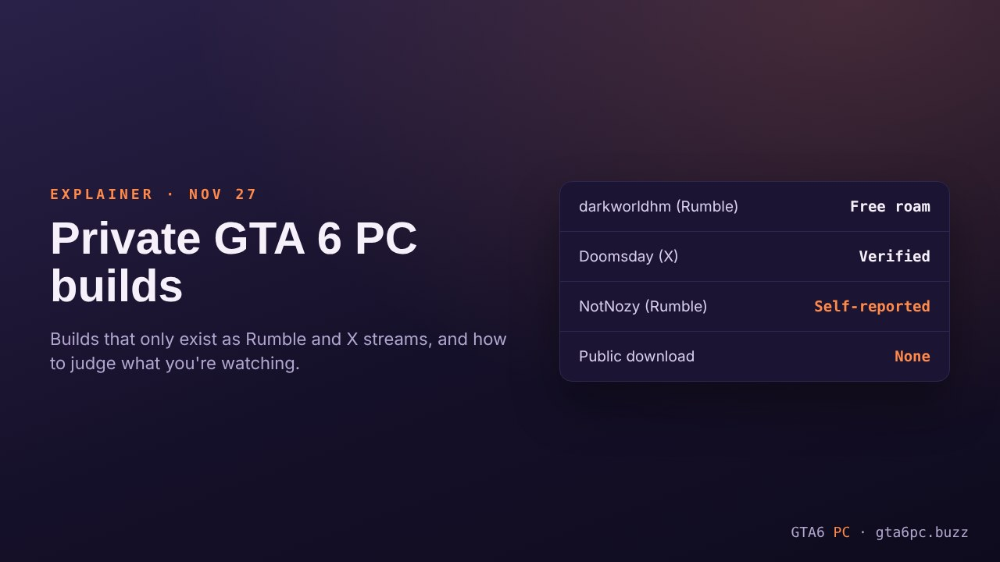
Private buildsWhy the Furthest GTA 6 PC Builds Are Private (and How to Spot a Fake Stream)
Some of the GTA 6 PC builds that reach free roam have no public code and only appear on Rumble or X streams. Here is who they are, what has been verified, and how to tell a real stream from a fake.
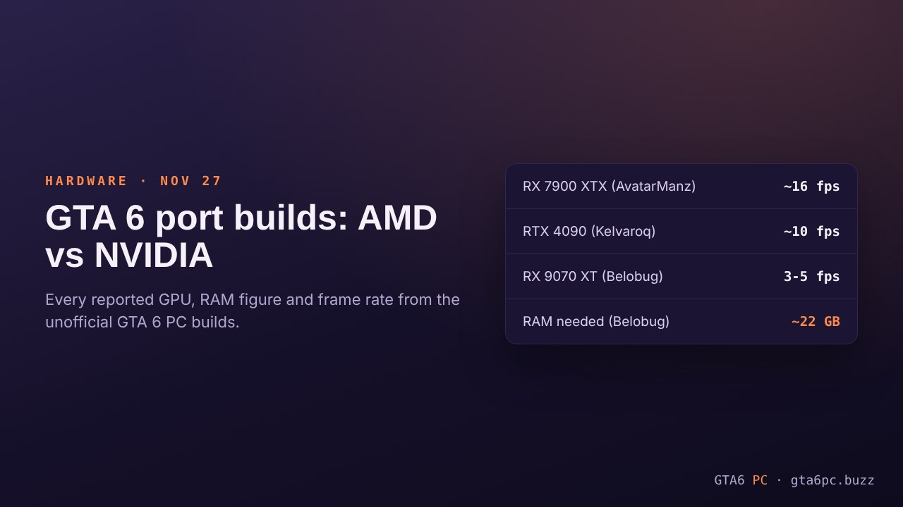
Port hardwareWhat PC Do the GTA 6 Port Builds Run On? AMD vs NVIDIA Results So Far
The unofficial GTA 6 PC builds are being tested on cards from the RTX 3050 to the RX 7900 XTX. Here is every reported spec and frame rate, why AMD builds lead, and why none of it tells you what the real PC version will need.
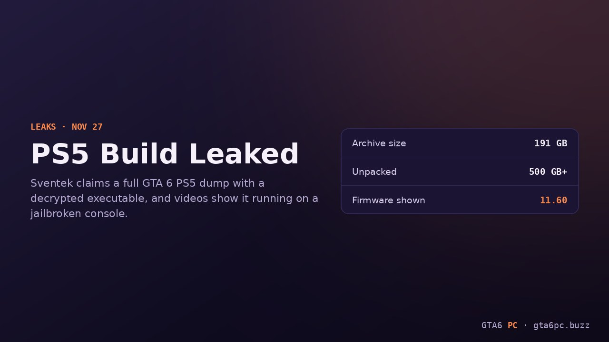
PS5 leak, Nov 27GTA 6 PS5 Build Leak: Sventek Dump, Jailbreak Video and What It Means for PC
A hacker called Sventek claims a full GTA 6 PS5 build with a decrypted executable leaked on November 25, 2026, and videos show it running on a jailbroken console. Here is what is confirmed, what is not, and what it means for PC.
 Multiplayer clip, Nov 27
Multiplayer clip, Nov 27GTA 6 Multiplayer on PC Port Video Explained: TeK Clip, 25 FPS Claim and What Is Real
A video posted November 26, 2026 shows two players moving around the same world in an unofficial GTA 6 PC build, with proximity voice chat. Here is what the clip shows, why it is unverified, and how it differs from real GTA Online.
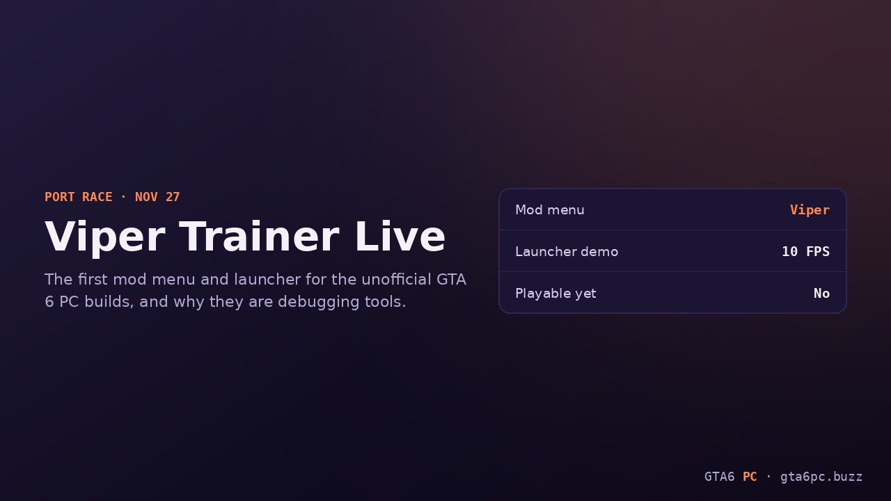
Mod menu, Nov 27GTA 6 PC Mod Menu and Launcher: Viper Trainer and the Suco Launcher Explained
The first unofficial GTA 6 PC mod menu, Viper, and a dedicated launcher appeared on November 26, 2026. Here is what they do, how they perform, and why they are debugging tools, not a playable PC version.
 Hacker sentenced
Hacker sentencedGTA 6 Hacker Arion Kurtaj Sentenced to Seven Years, Walks Free the Same Day
Arion Kurtaj, the Lapsus$ hacker behind the 2022 GTA 6 leak, was sentenced to seven years at Woolwich Crown Court on November 23, 2026, and released on licence the same day. Here is what happened and why.
 Port update, Nov 26
Port update, Nov 26GTA 6 PC Port Update, Nov 26: CGBJ Hits 91% and 25 FPS as Builds Reach Torrent Sites
The GTA 6 PC port race jumped forward on November 26, 2026. CGBJ reached 91 percent completion at 25 to 30 fps, AvatarManz hit 16 fps, and a build claiming to be CGBJ appeared on torrent sites. Nothing is playable or safe to download yet.
 GTA 6 on Switch 2
GTA 6 on Switch 2Is GTA 6 Coming to Nintendo Switch 2? What Take-Two and Nintendo Have Said
No Nintendo Switch 2 version of GTA 6 has been announced. Rockstar launched on PS5 and Xbox Series X|S only, Take-Two says platform news comes from Rockstar, and Nintendo says a port is Take-Two and Rockstar's call. The 2027 port claims are unconfirmed rumours.
 GTA 6 keyboard and mouse
GTA 6 keyboard and mouseWill GTA 6 on PC Support Keyboard and Mouse? What We Know So Far
GTA 6 has no native keyboard and mouse support on PS5 or Xbox, and there is no PC version yet. The only way to play with a keyboard and mouse on a PC today is Remote Play with a mapping tool, and the mouse only imitates a controller stick.
 $200 GTA 6 scam kit
$200 GTA 6 scam kitThe $200 GTA 6 PC Scam Kit: What NordVPN Found and How the Fake Downloads Work
NordVPN found a ready-made $200 kit on the dark web that bundles a fake GTA 6 PC download with a cookie stealer, a crypto wallet drainer, a hidden miner and a YouTube Shorts bot. Here is what is inside it and how its campaigns reach victims.
 AnyXboxX Neptune
AnyXboxX NeptuneAnyXboxX Neptune: The Xbox Emulator Fork Running GTA 6 at 14 to 17 FPS on PC
AnyXboxX is the Xbox Series X emulator fork in the GTA 6 PC port race. Its Neptune build reports 14 to 17 fps on an RTX 4070 SUPER, but it needs 32 GB of memory and the leaked Xbox build to run at all.
 GTA 6 in VR
GTA 6 in VRWill GTA 6 Support VR on PC? No VR Mode, No VR Mod, Only a Virtual Screen
GTA 6 has no VR mode and no VR mod, and Rockstar has announced nothing for headsets. The only way to play it in a headset today is the flat game on a virtual screen through PS VR2 Cinematic Mode or Quest Remote Play.
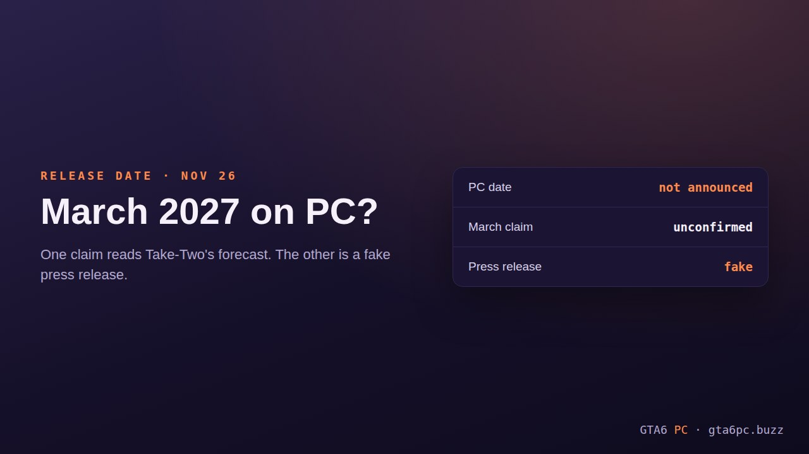
March 2027 claimGTA 6 PC in March 2027? The GameGPU Claim and the Fake Online Press Release
GameGPU claims GTA 6 reaches PC in March 2027 with GTA 6 Online on the same day, and a fake AI-made press release says the same thing. Here is what each claim is actually based on, and why neither is an announcement.
 Playable on PC?
Playable on PC?Is GTA 6 Playable on PC Yet? What 'Playable' Means in the Port Race
Six unofficial builds have reached interactive gameplay on PC, and one cleared the prologue at 1 to 3 fps. Here is what 'playable' means on the PortWatch tracker, why 1 to 3 fps is not playing, and what is still missing.
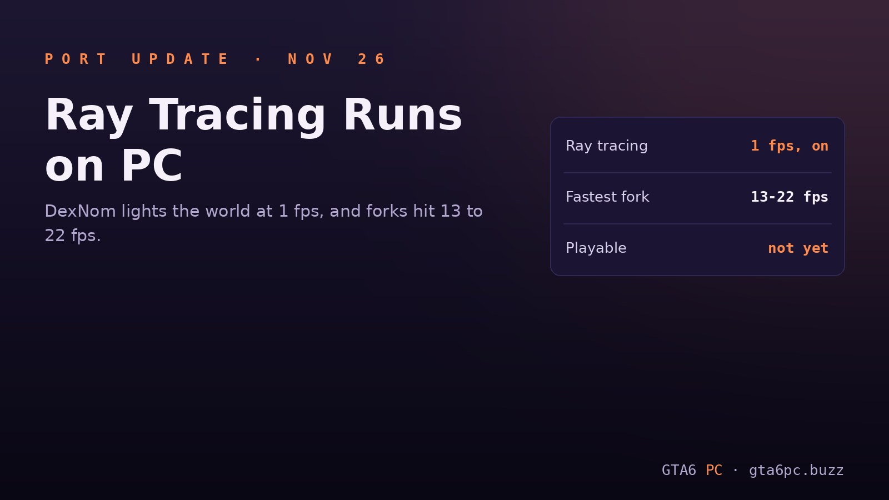
Ray tracing on PCGTA 6 on PC Gets Ray-Traced Lighting: DexNom, Belobug and the 13 FPS Forks
The AMD forks of VIctory now run GTA 6 with experimental ray-traced lighting on PC, and a combined fork reports 13 to 22 fps. The game is still far from playable, and every figure comes from single-machine tests.
 Take-Two crackdown
Take-Two crackdownWill Take-Two Shut Down Every GTA 6 PC Port? What Happens After Leonida
Take-Two disabled 3,007 repositories to kill Leonida, and it has a history of suing fan rebuilds. Here is what the takedown means for VIctory and the other port projects, and why the race is going private.
 Forks race on
Forks race onGTA 6 PC Port Update, Nov 25: Forks Hit 12 FPS as Take-Two Takes Down 3,007 Repos
One day after in-game rendering, GTA 6 PC forks report 5 to 12 fps and a 77-minute play session. Take-Two answered with a DMCA takedown of the Leonida network, 3,007 repositories in total.
 Ultrawide on PC
Ultrawide on PCWill GTA 6 Support Ultrawide on PC? 21:9 and 32:9 Explained
Rockstar has not confirmed ultrawide support for GTA 6 on PC yet. Here is what its last PC ports did, what 21:9 and 32:9 would cost in performance, and what to expect.
 120fps on PC?
120fps on PC?Will GTA 6 Run at 120fps on PC? High Refresh Rates Explained
Consoles are capped at 30fps, but a PC version should not be. Here is why the CPU is the real limit, what Rockstar's last PC ports did, and what your PC would need for 120fps.
 GTA 6 on Mac
GTA 6 on MacIs GTA 6 on Mac? The Real Status, the Viral Clips, and How to Play
No Mac version of GTA 6 exists, and Rockstar has not announced one. Here is what the viral Mac clips really show, the only legitimate way to play on a Mac today, and the route a future PC version could open.
 In-game on PC
In-game on PCGTA 6 Reaches In-Game Rendering on PC, a Day After the Xbox Executable Leak
One day after the missing GTA 6 Xbox executable leaked, the unofficial PC port projects moved past the menus. VIctory now renders in-game graphics, and a private build called CGBJ reportedly lets a player move and talk to NPCs. Nothing is playable yet.
GTA 6 PC Port Tracker: How Portwatch Scores the Race to Play on PC
Portwatch is a live scoreboard for every unofficial attempt to run GTA 6 on PC. Here is how its scale works, what each milestone means, which projects it tracks, and how to tell a real milestone from a fake download.
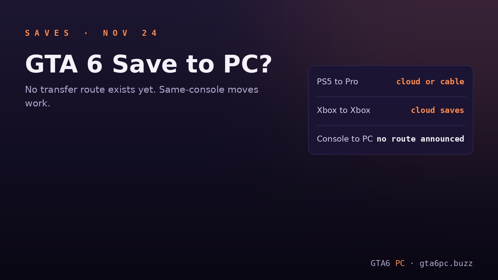
Save transfer to PCCan You Transfer Your GTA 6 Save from PS5 or Xbox to PC?
There is no announced way to move a GTA 6 save from PS5 or Xbox to PC, and no PC version exists yet. Same-console moves work: PS5 to PS5 Pro through cloud or cable, and Xbox to Xbox automatically. Here is every route that works and every one that does not.
 DLSS and FSR on PC
DLSS and FSR on PCWill GTA 6 on PC Support DLSS and FSR? What Rockstar's Last PC Port Tells Us
Rockstar has not announced a PC version of GTA 6, so DLSS and FSR support is not confirmed. But GTA 5 Enhanced, Rockstar's most recent PC release, shipped with Nvidia DLSS 3, AMD FSR 1 and 3, and Intel XeSS. That is the best evidence for what GTA 6 on PC will offer.
 Opening weekend sales
Opening weekend salesGTA 6 Opening Weekend Sales: 44.9 Million Copies and $4 Billion (Estimate)
Alinea Analytics estimates GTA 6 sold 44.9 million copies and made more than $4 billion in its first four days. Take-Two confirmed $3.79 billion on day one. Here is what is official and what is an estimate.
 Controller on PC
Controller on PCCan You Play GTA 6 on PC with a Controller? DualSense, Xbox and Mouse
Rockstar has announced nothing about GTA 6 on PC, so controller support is unconfirmed. But GTA 5 Enhanced on PC supports DualSense with adaptive triggers, Xbox controllers and full mouse and keyboard controls. Here is what to expect.
 VIctory vs XCL port race
VIctory vs XCL port raceGTA 6 PC Port Race, November 25: Walking Around In-Game at About 3fps
Forks of the VIctory project now let a player walk around inside GTA 6 on PC, at about 3 frames per second with black shadows. Here is where VIctory, XCL and the other port projects stand on November 25, and why nothing is playable yet.
 GTA 6 map size
GTA 6 map sizeHow Big Is the GTA 6 Map? Leonida Size Compared to GTA 5 and RDR2
Rockstar says Leonida is about twice the size of GTA 5 and three times Red Dead Redemption 2, with Vice City alone twice Los Santos. Here are the official ratios, the measured estimates, and the six regions.
 GTA 6 on GeForce Now
GTA 6 on GeForce NowWill GTA 6 Come to GeForce Now? Cloud Gaming on PC Explained
GTA 6 streams to Xbox consoles through Xbox Cloud Gaming, but not to PC. GeForce Now has no Rockstar games at all. Here is every cloud option for PC players, and what would have to change.
 GTA 6 PC anti-cheat
GTA 6 PC anti-cheatWill GTA 6 PC Use BattlEye Anti-Cheat? What We Know So Far
Rockstar added BattlEye to GTA Online on PC in September 2024, after nine years without official anti-cheat. Rockstar has said nothing about GTA 6 PC anti-cheat yet, but the GTA Online precedent points one way.
 GTA 6 boots on PC
GTA 6 boots on PCGTA 6 Boots on PC Hours After Cyberleek Releases the Missing Executable
Cyberleek released the missing GTA 6 Xbox executable on November 23, 2026. Within about three hours, modders booted the game on a Windows PC, reaching the settings screens with no gameplay. Here is what happened and what it does not mean.
 Rockstar crackdown
Rockstar crackdownTake-Two Confirms DMCA Takedown That Shut Down GTA 6 PC Port Project Leonida
Take-Two has confirmed it shut down Leonida, the fan project trying to run GTA 6 on PC, with a DMCA notice that removed 3,007 GitHub repositories. Here is what the notice says, what happened to the developers, and what is still running.
 Who is Cyberleek?
Who is Cyberleek?Who Is Cyberleek? The GTA 6 Leakers and Their Crypto Token, Explained
Cyberleek is the anonymous group behind the GTA 6 Xbox build leak. Here's what's known about them, their CYBERLEEK token and why critics call it a crypto pump.
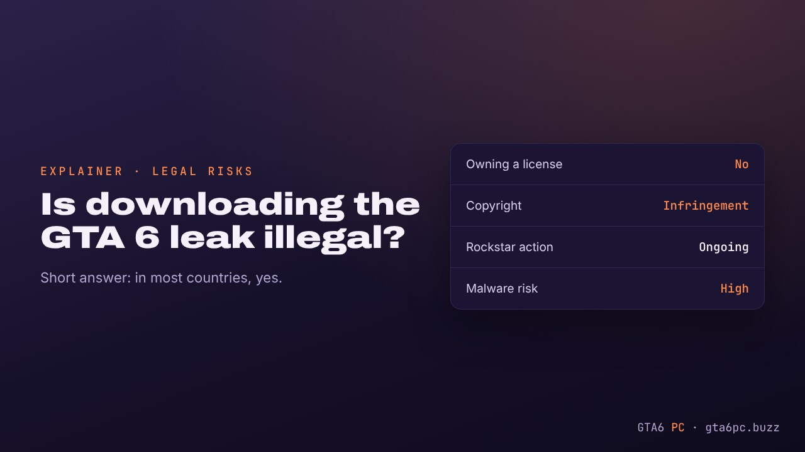
Is it illegal?Is It Illegal to Download the Leaked GTA 6 Build? Risks Explained
The leaked GTA 6 Xbox build and executable are spreading online. Here's why downloading them is copyright infringement in most countries, plus the malware and account risks.
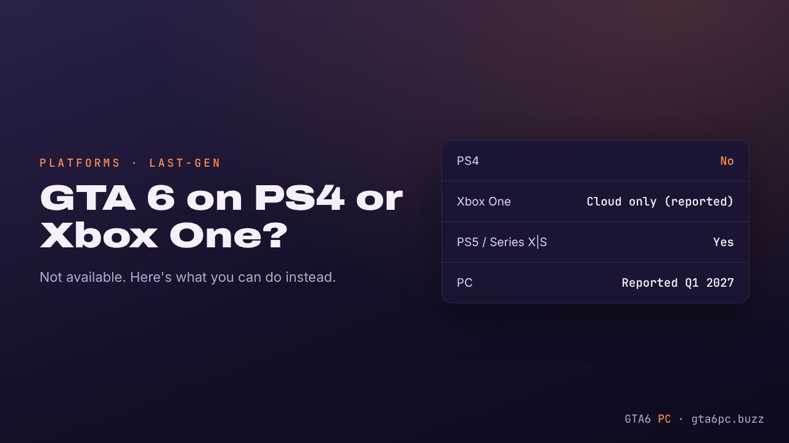
PS4 & Xbox OneCan You Play GTA 6 on PS4 or Xbox One? (And What About PC?)
GTA 6 isn't available on PS4 or Xbox One, only PS5 and Xbox Series X|S. Here's why, the cloud option for Xbox One owners, and how PC fits in.
 India & Pakistan price
India & Pakistan priceGTA 6 Price in India and Pakistan: Console Prices and What PC Might Cost
GTA 6 costs Rs 5,999 (Standard) and Rs 7,499 (Ultimate) in India. Here's the Pakistan picture, console costs, and what the PC version might cost in South Asia.
 Best GPUs
Best GPUsBest Graphics Cards for GTA 6 on PC: 1080p, 1440p and 4K (Estimates)
Which GPU will you need for GTA 6 on PC? Our estimates for 1080p, 1440p and 4K, based on how the game runs on PS5 Pro and Rockstar's past PC releases.
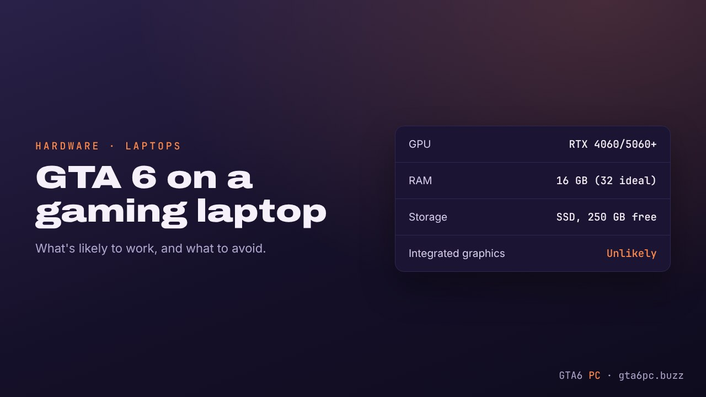
Gaming laptopsWill GTA 6 Run on a Gaming Laptop? What to Look For (Estimates)
Planning to play GTA 6 on a laptop? Here's what kind of gaming laptop will likely handle it, what to avoid, and why storage and cooling matter as much as the GPU.
 Capture card guide
Capture card guideHow to Play GTA 6 on Your PC Monitor with a Capture Card
Want GTA 6 on your PC monitor, or to stream it? A capture card can show your PS5 or Xbox on your PC. Here's how it works, what to buy and how to avoid lag.
 Remote Play lag fix
Remote Play lag fixGTA 6 Remote Play Lag on PC: 9 Fixes That Actually Help
Streaming GTA 6 from your PS5 or Xbox to a PC and getting lag or a blurry picture? Here are nine practical fixes, from wired connections to router settings.
 Play on PC now
Play on PC nowHow to Play GTA 6 on PC Right Now (Legally): Remote Play Explained
There's no GTA 6 PC version yet, but Rockstar confirmed Remote Play. If you own a PS5 or Xbox Series X|S, you can stream GTA 6 to your PC today. Here's how.
 30 FPS on console
30 FPS on consoleGTA 6 Runs at 30 FPS on Consoles: Why the PC Version Matters
Digital Foundry found GTA 6 targets 30 FPS on every console, even PS5 Pro, with Series S at about 720p. Here's the breakdown and what PC players can expect.
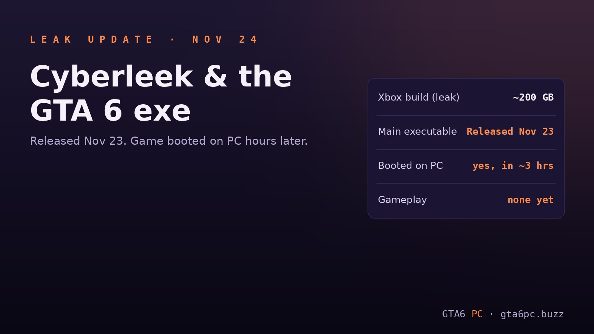
Cyberleek exeCyberleek Released the GTA 6 Executable (November 24 Update)
Cyberleek released the missing GTA 6 Xbox executable on November 23, 2026, and modders booted the game on PC within hours. Here is what happened and what it did and did not change.
 Leonida project
Leonida projectLeonida: The GTA 6 Xbox-to-PC Recompilation Project Explained
Leonida was an open-source project that tried to recompile GTA 6's Xbox version to run natively on PC. It translated 26,503 shaders, but the game never booted, and the project shut down on November 24, 2026.
 PS5 dump status
PS5 dump statusHas GTA 6 Been Dumped on PS5? Firmware 14.23 Explained
Sony made PS5 firmware 14.23 mandatory for GTA 6, while public jailbreaks stop at 13.60. Here's why GTA 6 hasn't been dumped and what it means for PC projects.
 Take-Two earnings
Take-Two earningsWhat Take-Two Said About GTA 6 (and PC) in Its Latest Earnings
Take-Two's November 2026 earnings call said GTA 6 pre-orders were far above expectations, but said nothing about a PC version. Here are the key takeaways.
 Sales & PC
Sales & PCGTA 6 Sales Forecasts: Record Pre-Orders and What PC Could Add
Analysts forecast $3.25–5.2 billion in GTA 6's first week. Here's what the pre-order records show, and why a PC release could add a second wave of sales.
 Leaks timeline
Leaks timelineEvery Major GTA 6 Leak: From the 2022 Hack to the Cyberleek Xbox Build
GTA 6 is one of the most-leaked games ever. Here's a timeline of the biggest leaks, from the 2022 development videos to the early trailer and the 2026 Xbox build.
 AnyPS5 & GTA 6
AnyPS5 & GTA 6AnyPS5 and GTA 6: Can PS5 Games Run on PC Without an Emulator?
AnyPS5 is an open-source project that turns PS5 games into native PC programs. Here's how it works, how far it's got, and why GTA 6 isn't running on it.
 When on PC?
When on PC?When Is GTA 6 Coming to PC? Release Date Status (November 2026)
GTA 6 is out on PS5 and Xbox Series X|S, but Rockstar hasn't set a PC date. Here's the reported Q1 2027 window, what Rockstar's history suggests, and what to watch for.
 PC launch
PC launchGTA 6 PC Launch: What to Expect When It Arrives
What the GTA 6 PC launch will probably look like: which stores, which PC features, what hardware you'll need, and which claims to ignore until Rockstar confirms them.
 PC leaks
PC leaksGTA 6 PC Leak Explained: The Cyberleek Xbox Build and What's Real
A hacker group says it leaked a near-complete GTA 6 Xbox build. Here's what was released, whether it can run on PC, the fake videos going around, and the malware risk.
 Built for PC
Built for PCIs GTA 6 Built for PC? Native Port vs Emulation vs Recompilation
"Native PC build", "emulated" and "recompiled" mean very different things. Here's what each one means for GTA 6, and which kind of PC version is actually real.
 Xbox build on PC
Xbox build on PCCan the Leaked GTA 6 Xbox Build Run on PC? (November 2026)
A leaked GTA 6 Xbox build has people asking whether it can run on Windows. Here's why it can't yet, what stands in the way, and why fake download sites are the real danger.
 System requirements
System requirementsGTA 6 PC System Requirements: What We Know and What to Expect
Rockstar hasn't published GTA 6 PC requirements yet. Here's what the console hardware tells us, our estimated specs, and how much storage to plan for.
 PC price
PC priceGTA 6 PC Price: How Much Will It Cost? (Editions Explained)
GTA 6 costs $79.99 on PS5 and Xbox, with a $99.99 Ultimate Edition. Here's what that means for the PC price, and why you shouldn't buy PC keys yet.
 GTA 6 Online
GTA 6 OnlineGTA 6 Online on PC: Release Date and What We Know
GTA 6 launched on November 19, 2026 without an online mode, and Rockstar has still announced none. Reports point to a 2027 release for GTA 6 Online. Here is the launch picture, the hints in the game files, and what it means for PC players.
 File size
File sizeGTA 6 File Size: How Many GB on PS5, Xbox and PC?
GTA 6 is reported to be about a 210 GB download on PS5. Here's what that means for Xbox Series S owners, and how much space to plan for on PC.
 Scam warning
Scam warningFake GTA 6 PC Downloads: How to Spot the Scams and Stay Safe
There is no GTA 6 PC download. Fake installers, demos and ISOs are spreading infostealers and ransomware. Here's how to spot them and what to do if you clicked one.
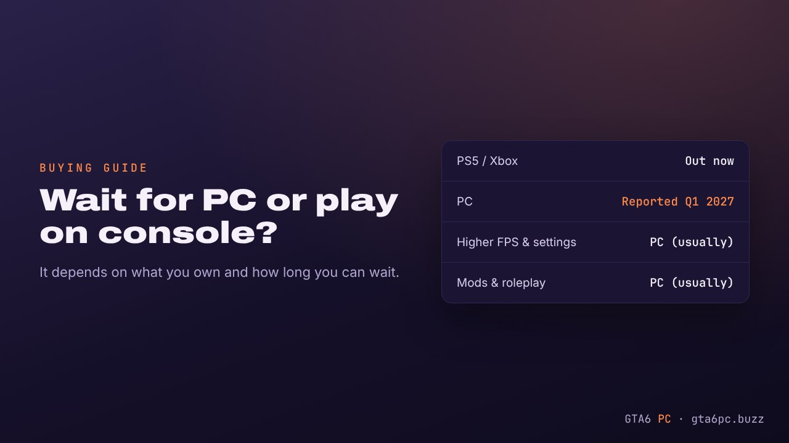
PC vs consoleGTA 6: Wait for PC or Play on PS5/Xbox Now?
GTA 6 is out on PS5 and Xbox, while PC is reportedly coming in early 2027. Here's how to decide whether to wait, based on what Rockstar's PC versions usually add.
 Mods & FiveM
Mods & FiveMGTA 6 PC Mods and FiveM Roleplay: What to Expect
Mods and roleplay servers kept GTA V alive on PC for over a decade. Rockstar bought the FiveM team in 2023. Here's what that could mean for GTA 6 on PC.
 Rockstar PC history
Rockstar PC historyEvery Rockstar PC Port and What It Says About GTA 6 on PC
From GTA IV to Red Dead Redemption 2, here's how long Rockstar's PC versions took, how they launched, and what that history suggests for GTA 6 on PC.
 PC emulator
PC emulatorGTA 6 PC Emulator: Can a PS5 or Xbox Emulator Run It?
No PS5 or Xbox Series emulator can run GTA 6 today. Here is what AnyPS5, KytyPS5 and the other projects can actually do, why GTA 6 is blocked at the first step, and how to judge the next claim.
 PS5 build on PC
PS5 build on PCDid the GTA 6 PS5 Build Run on PC? The Trending Claim, Checked
Posts claim a GTA 6 PS5 build is now running on PC. We checked the tracker data, the firmware blocker and the viral videos. Here is what has actually run on PC, and what has not.
 Native build status
Native build statusGTA 6 PC Native Build: Status Tracker (November 2026)
Tracking every route to a native GTA 6 build on PC: Rockstar's official version, AnyPS5 native conversion, KytyPS5, and the leaked Xbox build, with what is done, what is blocked, and what to watch next.
 On Steam?
On Steam?GTA 6 on Steam: A Suspicious App Page Appeared, But It Is Not Rockstar's Game
A Grand Theft Auto 6 page appeared on Steam around launch and was flagged as suspicious by SteamDB. Here is what the listing is, why it is not Rockstar's game, and how to tell a real Steam page from a fake one.
 Best PC build
Best PC buildBest PC Build for GTA 6: Budget, Mid-Range and High-End (Estimates)
No official GTA 6 PC requirements exist, so these builds are honest estimates from the console hardware: a budget 1080p build, a mid-range 1440p build, and a high-end 4K build, plus the storage every build needs.
 Fake videos
Fake videosFake GTA 6 PC Videos: The GTA 5 Hoax and the RTX 5080 Clip
A viral GTA 6 PC port video turned out to be GTA V footage. Another claims 25 fps on an RTX 5080 and is unverified. Here are the three fakes doing the rounds and a checklist that catches all of them.
 Modders race
Modders raceGTA 6 Xbox Leak: Modders Race to Beat Rockstar to PC
A claimed 209 GB Xbox build leak has modders racing to run GTA 6 on PC before Rockstar's official version, a story now drawing reaction videos with millions of views. Here is what the race actually looks like.
 PC Game Pass?
PC Game Pass?Will GTA 6 Come to PC Game Pass? What Microsoft, Rockstar and Take-Two Have Said
GTA 6 is not on Xbox Game Pass or PC Game Pass, and no inclusion has been announced. Here is what the stores show, why Take-Two avoids day-one subscription releases, and when a Game Pass debut could realistically happen.
 PC crossplay?
PC crossplay?Will GTA 6 on PC Have Crossplay with PS5 and Xbox?
GTA 6 launches as a single-player game with no online mode and no crossplay announced. Here is what GTA Online's history says about crossplay, and what PC players should expect.
 PC pre-order?
PC pre-order?Can You Pre-Order GTA 6 on PC? What the Stores Actually Show
There is no GTA 6 PC pre-order anywhere. No Steam, Epic or Rockstar Launcher page exists, and no PC keys are real. Here is what the stores show and when a real pre-order could open.
 RT and DLSS on PC?
RT and DLSS on PC?Will GTA 6 on PC Have Ray Tracing, DLSS and Ultrawide Support?
GTA 6 already uses full ray tracing on consoles, and GTA V Enhanced brought ray tracing, DLSS and ultrawide support to PC. Here is what is confirmed, what is only expected, and what it means for your graphics card.
 GTA 6 on Deck?
GTA 6 on Deck?Can You Play GTA 6 on Steam Deck?
There is no native GTA 6 on Steam Deck because there is no PC version yet. Streaming from your own console works today, and GTA 5's history on Deck shows what to expect when the PC version arrives.
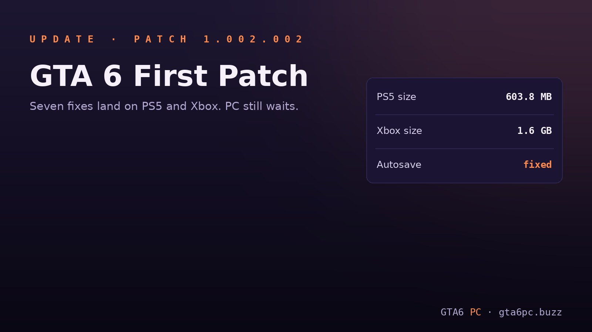
First patch liveGTA 6 Update 1.002.002: First Patch Fixes Autosave, Crashes and More
Rockstar rolled out GTA 6 update 1.002.002 on November 23, 2026, the first patch since launch. It fixes autosave, crashes, stuck weather and more on PS5 and Xbox. Here are the full patch notes and what they mean for PC.
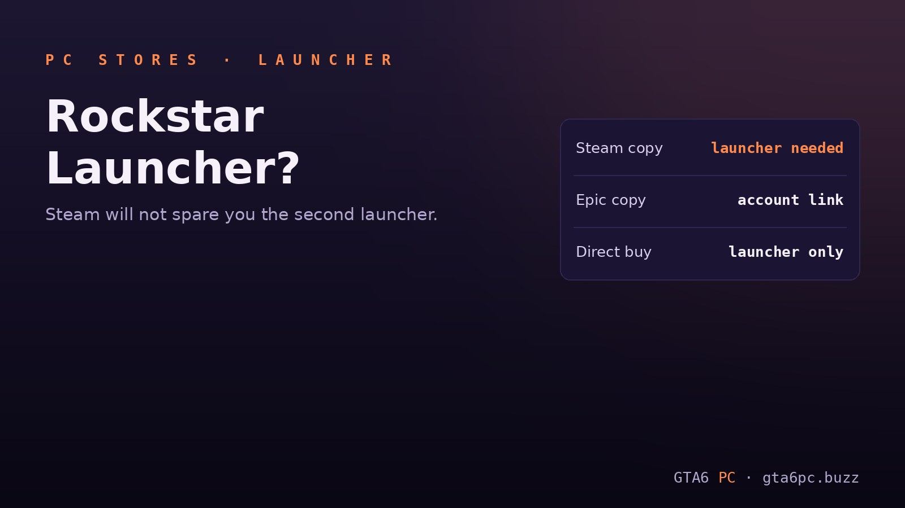
Launcher required?Will GTA 6 on PC Need the Rockstar Games Launcher?
Rockstar has not announced a PC version of GTA 6, so no launcher requirement is confirmed. But GTA V Enhanced, Rockstar's latest PC release, requires a Rockstar account and the Rockstar Games Launcher even on Steam. Here is what to expect.